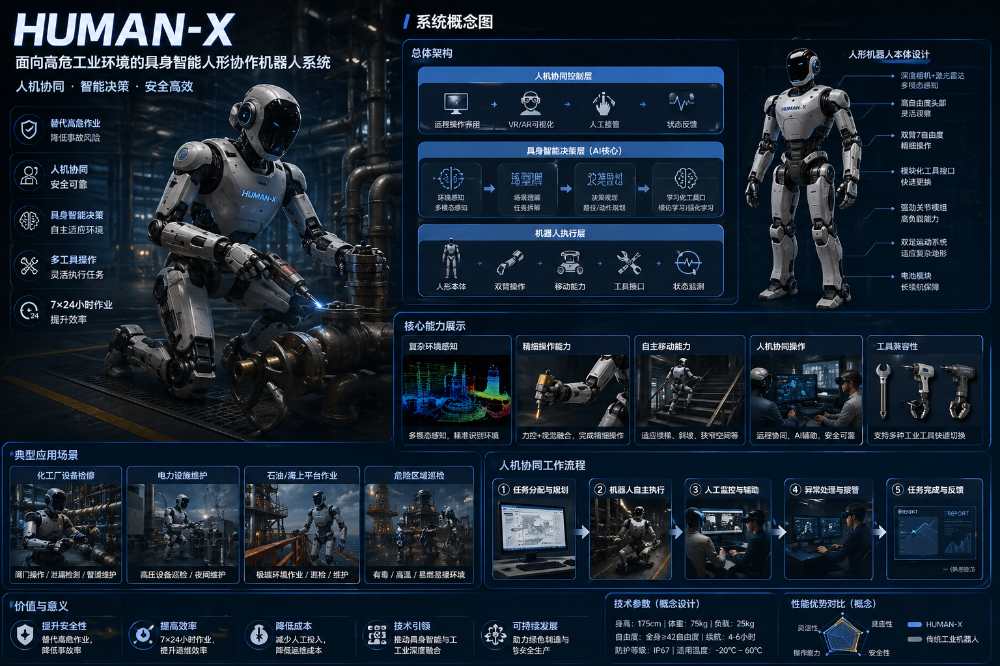
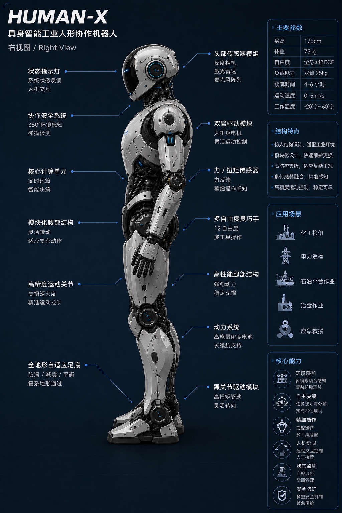
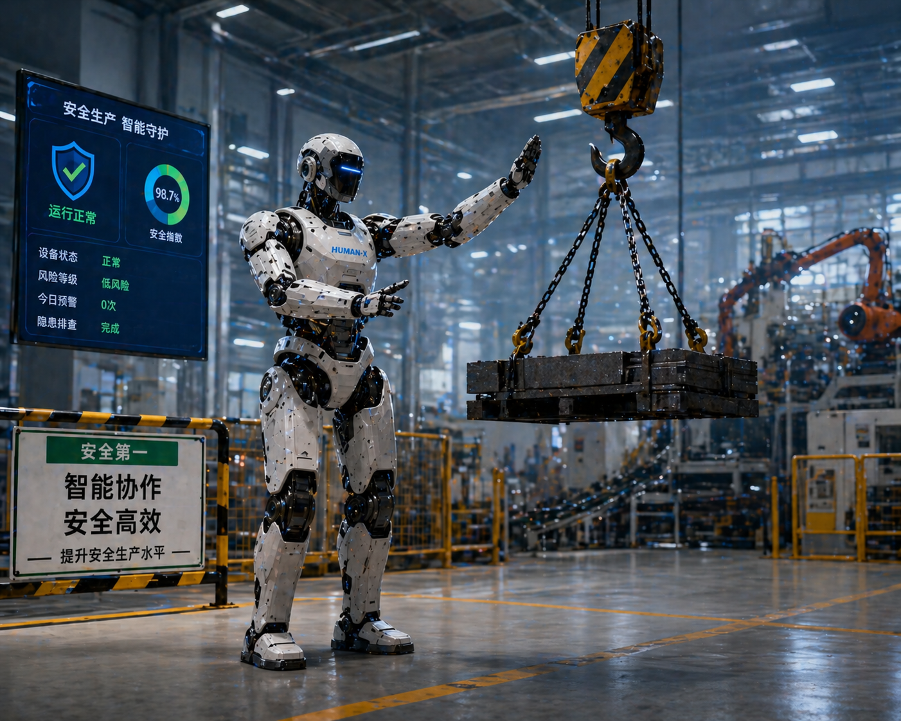
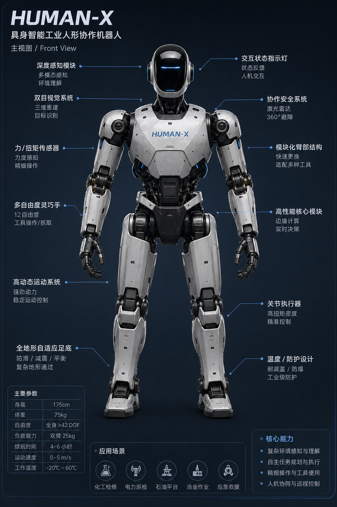
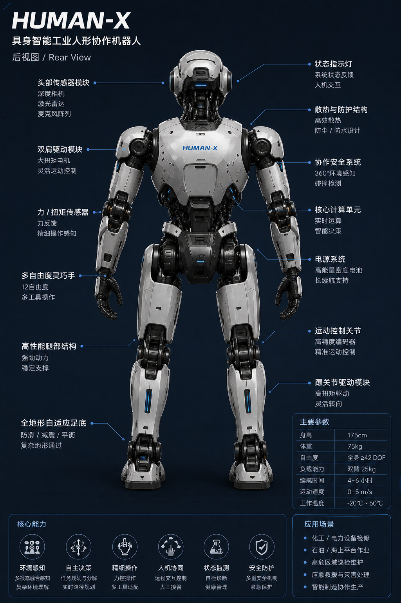
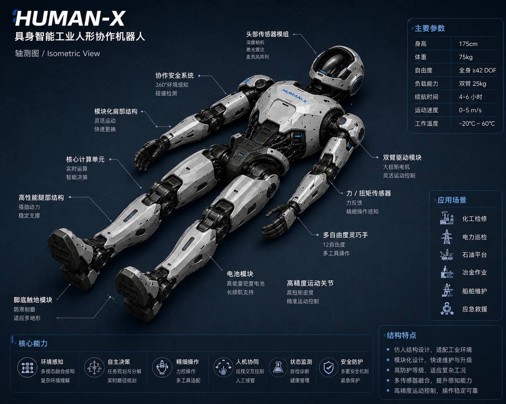
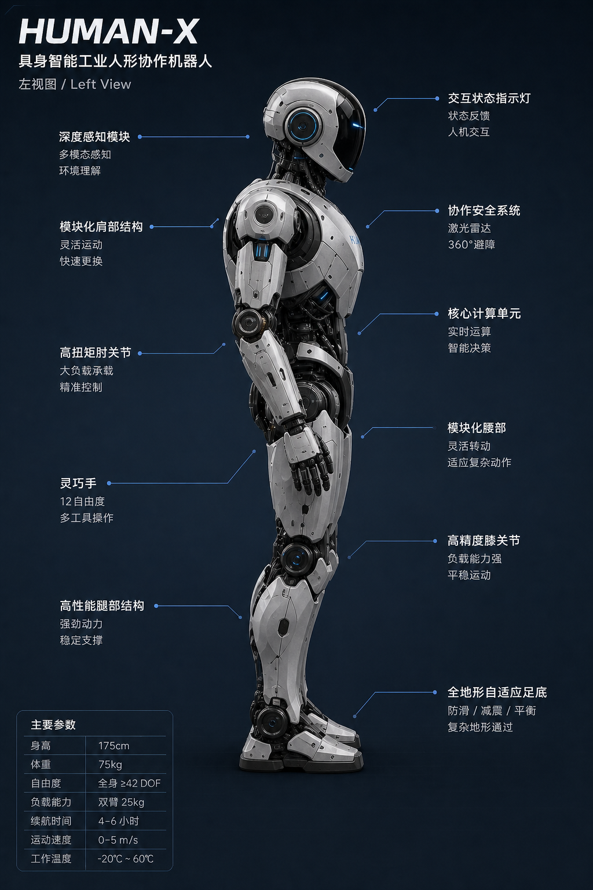
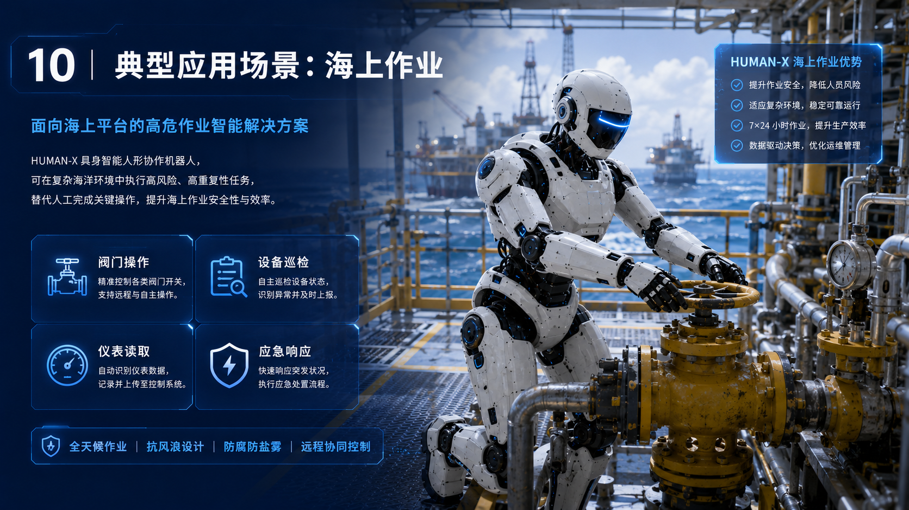
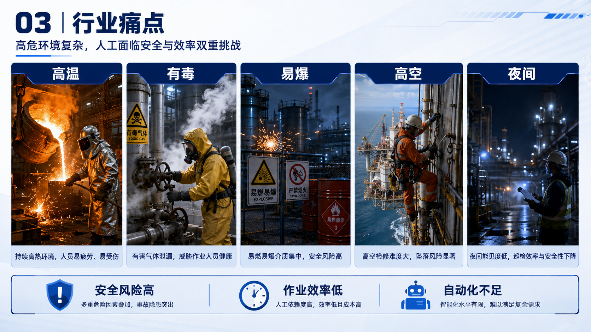

works / HUMAN-X robot series
HUMAN-X 机器人系列
HUMAN-X ROBOT SERIES · 高危环境人机协作系统视觉方案
面向海上平台、化工厂、火灾救援等高危工业场景的人机协作机器人系统方案：以蓝白工业科技基调建立系统视觉，从行业痛点、概念定义、结构与核心技术的系统化梳理，到场景演示与数字孪生智能中枢的完整叙事。

系列主视觉 / Key Visual
以蓝白工业基调建立系列主视觉，HUMAN-X 人形机器人成为贯穿全套方案的统一视觉符号。

高危环境行业痛点分析

项目概念综合总览
外观结构与组件解析

环境感知核心技术示意

智能决策与路径规划

人机协同作业模式

人机协作流程闭环

人机协作四步流程

海上平台阀门操控

化工厂有毒气体巡检
火灾废墟人机救援

数字孪生智能中枢